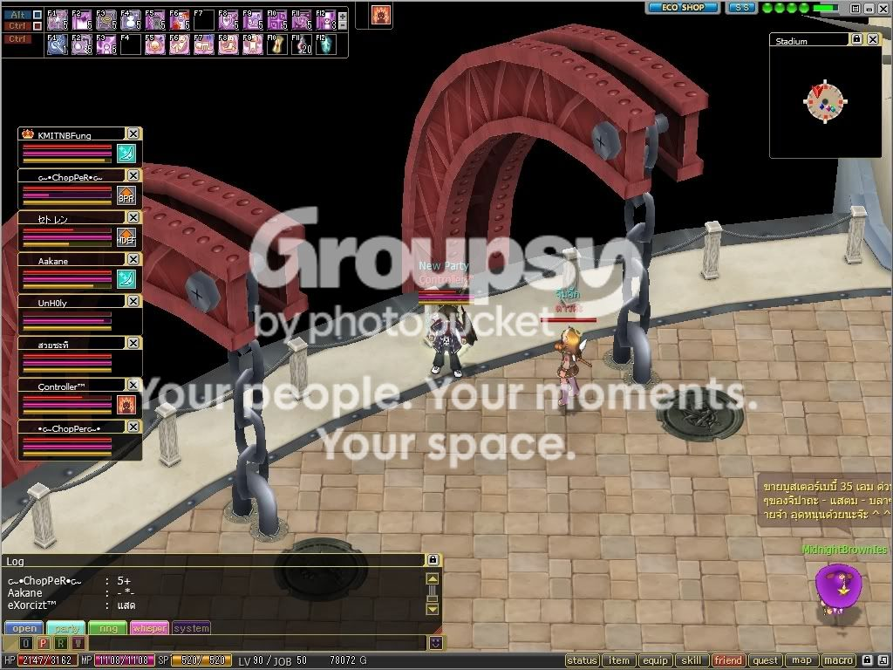

หน้า 1 จากทั้งหมด 1
ขอดูภาพตอนใช้Dark flareหน่อยงับ

โพสต์แล้ว:
เสาร์ 10 พ.ค. 2008 5:40 pmโดย ECO
อาจจะพิมผิดนะ ตามหัวข้อเลยงับ Energy flareก็ได้นะ
โพสต์แล้ว:
เสาร์ 10 พ.ค. 2008 10:39 pmโดย ECO
ไม่เเน่ใจว่าDark Flare กะEnergy Flareเหมือนกันป่าวนะ เเต่ผลที่เกิดจากสกิลคือ ทำdmg
ครั้งเเรงที่ยิง เเล้วก็ลดhpอย่างต่อเนื่องนะ ไปลองให้มะกี้เอง

ภาพหลังหลังจากโดนยิง ภาพ2นี่ผ่านไปสัก5วินาที
โพสต์แล้ว:
อาทิตย์ 11 พ.ค. 2008 2:50 pmโดย ECO
มันก็เหมือนกันกะเผาหัวใน Do..A อ่ะแล่ะน่า
งิงิ
รูปมันบ่งบอกอยู่
โพสต์แล้ว:
อาทิตย์ 11 พ.ค. 2008 7:04 pmโดย ECO
นายตัวกลม เขียน:มันก็เหมือนกันกะเผาหัวใน Do..A อ่ะแล่ะน่า
งิงิ
รูปมันบ่งบอกอยู่
ก็Axeไง เผาhp ฟันสักนิด เเล้วอัลติใส่ 55+
โพสต์แล้ว:
จันทร์ 12 พ.ค. 2008 1:25 amโดย ECO
ชชอตแรกลดไป300.....ลดต่อเนื่องไป800... ยิงเวทแรงๆใส่ดีกว่านะ = =หรือไม่ก้ยิงใส่พวกถึกๆ
โพสต์แล้ว:
จันทร์ 12 พ.ค. 2008 8:21 pmโดย ECO
ในวิกิมันบอกลดต่อเนื่อง 20 วิไม่ใช่รึ
ตอนถ่ายมันหยุดลดรึยังนั่น
โพสต์แล้ว:
จันทร์ 12 พ.ค. 2008 8:30 pmโดย ECO
เวทนี้แรงไม่แรงอยู่ที่ Vit ของเป้าหมายน้า
ง่ายๆคือ Vit ยิ่งเยอะมันก็ยิ่งแรงละ พวกวิทเยอะๆโดนที่ร้องจ๊ากเลยละ
แต่ก็อย่างไรมันไม่คุ้มอะที่จะอัพไว้เพราะมันค่อยๆลด ไม่ได้ลดทีเดียว
เลยทำให้ปั้มยาได้ โอกาสทำให้ศัตรูตายนั้นแทบจะว่าน้อยเลยละ
โพสต์แล้ว:
จันทร์ 12 พ.ค. 2008 11:38 pmโดย ECO
DarkกับEnergyมันก้อเมหือนกันแหละ....
แต่ก็ดีตรงที่อาเรสรักษาไม่ได้ แต่ปั้มส่วนได้นี่สิ
โพสต์แล้ว:
อังคาร 13 พ.ค. 2008 1:15 amโดย ECO
ลอง Energy Flair แล้วเหมือนกัน
พอ switch ไม่โอนเลย
ห่วยสุดๆ
โพสต์แล้ว:
อังคาร 13 พ.ค. 2008 12:56 pmโดย ECO
นายตัวกลม เขียน:ลอง Energy Flair แล้วเหมือนกัน
พอ switch ไม่โอนเลย
ห่วยสุดๆ
อภิมหาโคตะระห่วยเลย ดอทเอมั้ย..
โพสต์แล้ว:
อังคาร 13 พ.ค. 2008 9:57 pmโดย ECO
Controller เขียน:นายตัวกลม เขียน:ลอง Energy Flair แล้วเหมือนกัน
พอ switch ไม่โอนเลย
ห่วยสุดๆ
อภิมหาโคตะระห่วยเลย ดอทเอมั้ย..
บอสช้างดีกว่ามั๊ย???